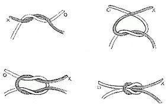

Jungle Survival
Simpul
Dalam Kamus Besar Bahasa Indonesia disebutkan bahwa simpul adalah ikatan pada tali atau benang. Yang berarti simpul merupakan hasil atau bentukan dari satu atau dua utas tali, dan dalam kegiatan alam bebas ada beberapa macam simpul yang biasanya digunakan seperti simpul mati, simpul pangkal, simpul delapan, simpul nelayan dan sebagainya. Dan harus memenuhi syarat sebagai berikut:
1. mudah dibuat
2. cepat untuk dikuasai
3. aman (kuat)
4. mudah untuk dibuka
SIMPUL Mati
Biasa Digunakan untuk menyabungkan 2 buah tali yang sama diameternya (sama besar).

SIMPUL PANGKAL
Biasa digunakan untuk mengikat tali pada tiang atau pohon.
SIMPUL DELAPAN
Biasa untuk mengikatkan sesuatu. Banyak digunakan untuk simpul pada Harness atau Anchor (tambatan). Terdapat simpul delapan tunggal dan simpul delapan ganda.
simpul delapan tunggal
simpul delapan ganda
SIMPUL NELAYAN
Digunakan untuk menyambung dua buah tali yang sama besar tetapi licin.
SIMPUL ANYAM
Untuk menyambung dua buah tali yang tidak sama besar dan licin.
SIMPUL KAMBING
Gunakan untuk mengikat sesuatu. Bentuk ikatan seperti lingkaran dan tidak akan menjerat jika ditarik.
SIMPUL PITA
Gunanya untuk menyambung dua tali pipih, seperti webbing atau pita.
ITALIAN HITCH
Dikenal juga dengan nama simpul setengah pangkal. Dipergunakan untuk rapelling.
SIMPUL JANGKAR GANDA
atau disebut juga simpul prusik. Digunakan untuk meniti tali (prusiking).